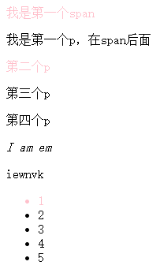
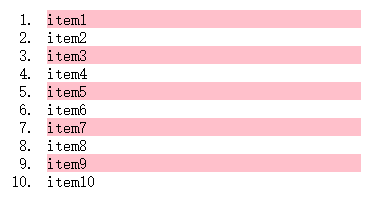
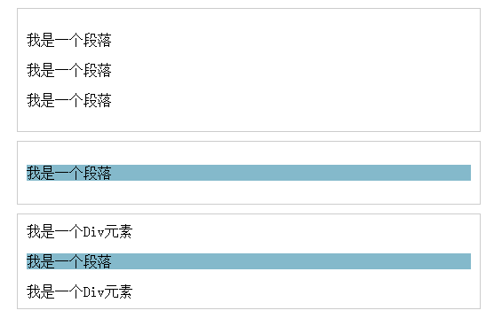
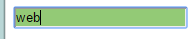
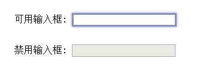
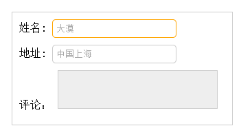

CSS
1. CSS介绍¶
层叠样式表(英文全称：Cascading Style Sheets)是一种用来表现HTML（标准通用标记语言的一个应用）或XML（标准通用标记语言的一个子集）等文件样式的计算机语言。CSS不仅可以静态地修饰网页，还可以配合各种脚本语言动态地对网页各元素进行格式化，CSS 能够对网页中元素位置的排版进行像素级精确控制，支持几乎所有的字体字号样式，拥有对网页对象和模型样式编辑的能力。
首先强调一点CSS在前端页面中的地位。HTML代码写完后。CSS对HTML进行修缮，也就是传说的"美容师"。如我们在浏览器上看到的页面中的字体颜色，字体大小，段落格式，图片，视频显示，而Js的作用就是我们让页面动起来。比如 我们鼠标点击，拖动等，动作都是js起到作用。
2. CSS 引入¶
2.1 特性¶
概念：层叠样式表或者级联样式表（Cascading style sheets）
层叠：CSS的特性
作用：设置网页结构样式(改变html标签样式)，通过CSS给HTML标签属性达到改变标签样式。
2.2 引入方式¶
2.2.1 内嵌方法¶
css样式写在html文件head内。
<head>
<style type="text/css">
样式表内容|CSS代码
</style>
</head>
2.2.2 外链方法¶
css样式为单独的文件，然后html文件链接到此css文件，极力推荐这样写。
<head>
<link rel="stylesheet" href="header.css">
<head>
2.2.3 行内方法¶
直接写在标签内的样式。
<body>
<h1 style="font-size:30px; color:red;">博客</h1>
</body>
3. 选择器¶
在 CSS 中，选择器是一种模式，用于选择需要添加样式的元素。选择器 {属性：值;} 选择器：选择标签的过程
- 标签选择器
- 类选择器
- D选择器
- 通配符选择器
交集选择器（标签指定式）
- 后代选择器
- 自带选择器
- 并集选择器
补充选择器 1. 伪类选择器 1. 属性选择器 1. 伪元素选择器
3.1 选择器介绍¶
"CSS" 列指示该属性是在哪个 CSS 版本中定义的。（CSS1、CSS2 还是 CSS3。 选择器|例子 |例子描述 |CSS版本 ---|---|---|--- .class |.intro 选择 |class="intro" 的所有元素。 |1
id |#firstname 选择 |id="firstname" 的所有元素。 |1¶
- |* 选择所有元素。 |2
element p |选择所有
元素。 |1 element,element |div,p |选择所有
元素和所有元素。 |1 element element |div p |选择
元素内部的所有元素。 |1 element>element |div>p |选择父元素为
元素的所有元素。 |2 element+element |div+p |选择紧接在
元素之后的所有元素。 |2 [attribute] |[target] |选择带有 target 属性所有元素。 |2 [attribute=value] |[target=_blank] |选择 target="_blank" 的所有元素。 |2 [attribute~=value] |[title~=flower] |选择 title 属性包含单词 "flower" 的所有元素。 |2 [attribute|=value] |[lang|=en] |选择 lang 属性值以 "en" 开头的所有元素。 |2 :link |a:link |选择所有未被访问的链接。 |1 :visited| |a:visited |选择所有已被访问的链接。 |1 :active |a:active| 选择活动链接。 |1 :hover| a:hover| 选择鼠标指针位于其上的链接。 |1 :focus| input:focus| 选择获得焦点的 input 元素。 |2 :first-letter| p:first-letter |选择每个
元素的首字母。 |1 :first-line| p:first-line |选择每个
元素的首行。 |1 :first-child| p:first-child |选择属于父元素的第一个子元素的每个
元素。 |2 :before |p:before| 在每个
元素的内容之前插入内容。 |2 :after |p:after| 在每个
元素的内容之后插入内容。 |2 :lang(language) |p:lang(it) |选择带有以 "it" 开头的 lang 属性值的每个
元素。 |2 element1~element2| |p~ul |选择前面有
元素的每个
- 元素。 |3
[attribute^=value]| a[src^="https"] |选择其 src 属性值以 "https" 开头的每个 元素。 |3
[attribute=value]| a[src=".pdf"] |选择其 src 属性以 ".pdf" 结尾的所有 元素。 |3
[attribute*=value]| a[src*="abc"] |选择其 src 属性中包含 "abc" 子串的每个 元素。 |3
:first-of-type |p:first-of-type |选择属于其父元素的首个
元素的每个
元素。 |3 :last-of-type |p:last-of-type |选择属于其父元素的最后
元素的每个
元素。 |3 :only-of-type |p:only-of-type |选择属于其父元素唯一的
元素的每个
元素。 |3 :only-child |p:only-child |选择属于其父元素的唯一子元素的每个
元素。 |3 :nth-child(n) |p:nth-child(2) |选择属于其父元素的第二个子元素的每个
元素。 |3 :nth-last-child(n) |p:nth-last-child(2) |同上，从最后一个子元素开始计数。 |3 :nth-of-type(n) |p:nth-of-type(2) |选择属于其父元素第二个
元素的每个
元素。 |3 :nth-last-of-type(n) |p:nth-last-of-type(2) |同上，但是从最后一个子元素开始计数。 |3 :last-child |p:last-child |选择属于其父元素最后一个子元素每个
元素。 |3 :root |:root |选择文档的根元素。 |3 :empty |p:empty |选择没有子元素的每个
元素（包括文本节点）。 |3 :target |#news:target |选择当前活动的 #news 元素。 |3 :enabled |input:enabled |选择每个启用的 元素。 |3 :disabled |input:disabled |选择每个禁用的 元素 |3 :checked |input:checked |选择每个被选中的 元素。 |3 :not(selector) |:not(p) |选择非
元素的每个元素。 |3 ::selection |::selection |选择被用户选取的元|3
3.2 标签选择器¶
Html标签名 {属性：值;} ，常用的属性:
属性 描述 color 前景色（文字颜色） backgroud-color 背景色 font-size 设置文字大小 width 设置宽度 height 设置高度 text-align left right text-indent 首行缩进 text-indent: 2em; 首行缩进两个汉字 text-indent: 20px; 首行缩进20像素 3.3 单位介绍¶
属性 | 描述 ---|--- px | 像素 20px----20像素点 em | 1em=1个文字大小，nem=n个文字大小
3.4 颜色¶
3.4.1 直接使用颜色的名词¶
- background-color: red;
3.4.2 使用16进制表示¶
- background-color: #000000;
3.3.3 使用三原色表示¶
解决IE低版本不兼容问题rgb r: red (0-255)取值范围 g:green (0-255)取值范围 b:blue (0-255)取值范围 background-color: rgb(23,56,89); 1. 半透明： background-color: rgba(23,56,89,0.2); #最后一位取值0到1 2. 使用opacity实现半透明 background-color: red; opacity: 0.5; 会让文字也半透明background-color: red; opacity: 0.5; filter: Alpha(opacity=50);
3.5 类选择器¶
首先，类 选择器前面有一个 . 号 也称为棋点号。
3.5.1 自定义类名¶
自定义类名 {属性：值;} - 通过.自定义类名 定义一个类样式 .p_red{ }
3.5.2 调用¶
标签通class属性调用类样式
此时会将标签p中class是p_red的选中<p class="p_red">文字2</p> .p_red{ color: red; } <p class="p_red">文字2</p>3.5.3 特点¶
- 一个样式可以被多个标签调用
2. 一个标签可以同时调用多个类样式(中间加空格)<p class="p_red">文字2</p> <div class="p_red">文字2</div>
<div class="p_red public">文字2</div>
3.5.4 命名规范¶
- 顾名思义 就是根据作用起对应的名字。比如排头滚动的标语，可以选择banner
- 通用类名
中文名 英文名 头 header 内 容 content/container 尾 footer 导 航 nav 侧 栏 sidebar 栏 目 column 标 志 logo 广 告 banner 热 点 hot 新 闻 news 下 载 download 菜 单 menu 搜 索 search 页 脚 footer 版 权 copyright 滚 动 scroll 内 容 content 友情链接 friendlink 子导 航 subnav 页面主体 main 左中 右 left right center 登录 条 loginbar 页面外围控制整体布局宽度 wrapper 以下是不推荐的写法
- 不能使用以数字开头
- 不推荐使用中文定义类名（虽然可以使用）
- 不能使用以特殊字符开头的
- 个人不推荐使用标签名作为定义类名 比如div作为class值的
3.6 ID 选择器¶
3.6.1 ID选择器语法¶
在某些方面，ID 选择器类似于类选择器，不过也有一些重要差别。首先，ID 选择器前面有一个 # 号 - 也称为棋盘号或井号。语法如下
语法： #自定义名称 {属性: 值;}3.6.2 使用¶
- 首先通过#自定义名称 定义一个id选择器样式
#color { color: red; }- 标签通过id属性调用id样式
<div class="one" id="color">caimengzhi</div>
- ID选择器和类选择器区别
1. 页面中的ID选择器值必须唯一，而类选择器可以重复。 2. 一个标签只能调用一个样式 <div class="p_red public">caimengzhi</div> 是对的 <div id="p_red public">caimengzhi</div> 是错误3.7 通配符选择器¶
通配选择器用一个星号（*）表示。单独使用时，这个选择器可以与文档中的任何元素匹配，就像一个通配符。 语法
使用：该选择器会将页面中所有标签都选中语法： * {属性: 值;.....}会在样式初始化时候使用。* { color: red; }3.7 font 属性介绍¶
1. font-size 文字大小 2. font-weight 文字加粗 1. normal 字体正常 2. 700 文字加粗 3. bold 文字加粗 4. 400 正常显示 3. font-style 文字斜体 1. normal 正常 2. italic 斜体 4. font-family 1. font-family: "微软雅黑"; 2. 文字字体表示方式 1. 直接设置字体对应名称，（宋体，黑体） 2. 设置字体对应的英文方式 3. 设置字体对应的unicode的编码 4. font-family 一次可以设置多个字体，字体字体之间用逗号隔开 5. line-height 设置文字行高3.8 font 属性连写¶
1. font: font-weight font-style font-size/line-height font-family font: 700 italic 30px/20px 微软雅黑;
注意
1. 属性联写中必须设置font-size font-family 2. 属性联写中font-szie必须放到font-family之前 3. 如果font属性联写中的属性都要设置，那么按照上述属性去设置
3.9 复合选择器¶
复合选择器是由两个或多个基础选择器，通过不同的方式组合而成的,目的是为了可以选择更准确更精细的目标元素标签
3.9.1 标签指定式选择器¶
语法：
关系标签名.类名 {属性: 值;} 或者 标签名#id名 {属性: 值;}如下图所有既。。。。又。。。。

div.one{ color: red; } <div class="one">div中的文字</div> <p class="one">p中的文字</p> <div class="two">cmz</div>3.9.2 后代选择器¶
后代选择器（descendant selector）又称为包含选择器。后代选择器可以选择作为某元素后代的元素。
语法： 选择器 选择器 ...{属性: 值;}注意
1. 后代选择器标签之间必须是嵌套关系 2. 选择器与选择器之间必须使用空格隔开 3. 后代选择器只能选中后代元素(所有后代)
显示效果如下div span { color: red; } <div class="one"> <span>文字1</span> <p> <span>文字2</span> </p> </div> <p class="tree">没有父元素p</p>
3.9.3 并集选择器¶
CSS并集选择器也叫群选择器，是由多个选择器通过逗号连接在一起的，这些选择器分别是：标签选择器、类选择器或id选择器等。
在声明各种CSS选择器时，如果某些选择器的风格完全相同，或者部分相同，便可以利用并集选择器同时声明这些风格相同的CSS选择器。
并集选择器允许同时给多个选择器应用同一种样式。
语法： 选择器,选择器...{属性: 值;}注意
1. 选择器与选择器之间是有逗号隔开 2. 选择器标签之间的结构可以是任何一种关系
div,p,span { color: blue; } <div class="one">123</div> <p class="one">456</p> <span>adsdsd</span>3.9.4 子代选择器¶
与后代选择器相比，子元素选择器（Child selectors）只能选择作为某元素子元素的元素,如果您不希望选择任意的后代元素，而是希望缩小范围，只选择某个元素的子元素，请使用子元素选择器（Child selector）。
语法： 选择器>选择器{属性: 值;} ---->子代就是儿子关系（下一代）注意
1. 子代选择器之间必须是嵌套结构 2. 子代选择器只能选择直接后代元素,也就是儿子那一代， 3. 后代选择器可以选中所有后代元素
.one>span{ color: red; } <div class="one"> <span>直接后代后者直接子代</span> <p> <span>后代元素</span> </p> </div>显示效果如下

3.9.5 属性选择器¶
可以为拥有指定属性的 HTML 元素设置样式，而不仅限于 class 和 id 属性。
语法： [属性名]{属性: 值;把具有id属性和class属性的标签选中
显示效果如下[id][class] { color: blue; } <div class="one">123</div> <div class="one" id="two">456</div> <div class="one" name="username">789</div>
属性选择器其他选择方式
3.9.5.1 属性选择器
=¶1. [属性=值]{ } /*属性赋值*/ [class="two"]{ color: crimson; } 选择有class属性器属性值为two的标签3.9.5.2 属性选择器
^=¶2. [属性^=值] [class^="two"] { color: darkblue; } 选择有calss属性且以two开头的标签3.9.5.3 属性选择器
$=¶[class$="two"] { color: darkblue; } 选择有calss属性且以two结束的标签3.9.5.4 属性选择器
*=¶[class*="two"] { color: darkblue; } 选择有class属性且只要标签中包含two就行3.10 伪类选择器¶
结构伪类是CSS3新增的类型选择器，利用DOM树实现元素过滤，通过文档结构的相互关系来匹配元素，可以减少class和id属性的定义，使文档变得更加简洁
3.10.1 root¶
选择元素所在文档的根元素。在(X)HTML文档中，根元素始终是html元素。
3.10.2 not¶
否定选择器，和jQuery中的:not选择器一模一样，可以选择除某个元素之外的所有元素。
<body> <div id="header">页头</div> <div id="page">页体</div> <div id="footer">页脚</div> </body> div{ padding: 10px 20px; min-height: 50px; } div:not([id="footer"]){ background: pink; }
3.10.3 empty¶
用来选择没有任何内容的元素，这里没有内容指的是一点内容都没有，哪怕是一个空格都不行
<body> <div>我这里有内容</div> <div> </div><!-- 我这里有一个空格 --> <div></div><!-- 我这里任何内容都没有 --> </body> div { min-height: 30px; } div:empty { background-color: green; }
3.10.4 first-child¶
选择F的第一个子元素(所有第一个子元素都会被选择) ,这里作为F(selector1)的第一个子元素的有 span、div里的p、ul的第一个li
<body> <div id="selector1"> <span>我是第一个span</span> <p>我是第一个p，在span后面</p> <div><p>第二个p</p></div> <p>第三个p</p> <p>第四个p</p> <em>I am em</em> <p>iewnvk</p> <ul> <li>1</li> <li>2</li> <li>3</li> <li>4</li> <li>5</li> </ul> </div> </body> #selector1 :first-child{ color: pink; }first-child的冒号要与前面的元素有一个空格的距离，否则它会把父元素里所有的子元素都选上

3.10.5 last-child¶
选择最后一个子元素 各种变化和:first-child一样，不再举例。
3.10.6 nth-child(n)¶
用来定位某父元素的一个或多个特定的子元素。其中“n”是参数，可以是整数值(1,2,3,4)，也可以是表达式(2n+1、-n+5)和关键词(odd、even)，参数n的起始值始终是1。也就是说，参数n的值为0时，选择器将选择不到任何匹配的元素。
- tr:nth-child(2n+1):匹配奇数行的tr
- tr:nth-child(2n):匹配偶数行的tr
- tr:nth-child(odd):匹配奇数行的tr
- tr:nth-child(even):匹配偶数行的tr
- tr:nth-child(4):匹配第四行的tr
<body> <ol> <li>item1</li> <li>item2</li> <li>item3</li> <li>item4</li> <li>item5</li> <li>item6</li> <li>item7</li> <li>item8</li> <li>item9</li> <li>item10</li> </ol> </body> ol > li:nth-child(2n-1){ background: pink; }
3.10.7 nth-child(n)¶
选择在其父元素中倒数第n个位置的元素或特定某元素。 计算顺序与:nth-child不同，其余用法相同，不再举例。
3.10.8 first-of-type¶
选择器类似于“:first-child”选择器，不同之处就是指定了元素的类型,其主要用来定位一个父元素下的某个类型的第一个子元素。 在E:first-of-type功能类似于E:nth-of-type(1)
<body> <div class="wrapper"> <p>我是第一个段落</p> <p>我是第二个段落</p> <div>我是第一个Div元素</div> <div>我是第二个Div元素</div> <p>我是第三个段落</p> <p>我是第四个段落</p> <div>我是第三个Div元素</div> <div>我是第四个Div元素</div> </div> </body> .wrapper > p, .wrapper > div { margin: 10px 0; background:#89c3eb; color: #fff; padding: 5px; } .wrapper > div:first-of-type { background: #928178; }
3.10.9 last-of-type¶
选择器和“:first-of-type”选择器功能是一样的，不同的是他选择是父元素下的某个类型的最后一个子元素。不再举例
3.10.10 nth-of-type(n)¶
选择器和“:nth-child(n)”选择器非常类似，不同的是它只计算父元素中指定的某种类型的子元素[即E:nth-of-type(n)]。当某个元素中的子元素不单是同一种类型的子元素时，使用“:nth-of-type(n)”选择器来定位于父元素中某种类型的子元素是非常方便和有用的。在“:nth-of-type(n)”选择器中的“n”和“:nth-child(n)”选择器中的“n”参数也一样，可以是具体的整数，也可以是表达式，还可以是关键词。
<body> <div class="wrapper"> <div>我是一个Div元素</div> <p>我是一个段落元素</p> <div>我是一个Div元素</div> <p>我是一个段落</p> <div>我是一个Div元素</div> <p>我是一个段落</p> <div>我是一个Div元素</div> <p>我是一个段落</p> <div>我是一个Div元素</div> <p>我是一个段落</p> <div>我是一个Div元素</div> <p>我是一个段落</p> <div>我是一个Div元素</div> <p>我是一个段落</p> <div>我是一个Div元素</div> <p>我是一个段落</p> </div> </body> .wrapper > div:nth-of-type(odd), .wrapper > p:nth-of-type(even){ background: #59b9c6; }
3.10.11 nth-last-of-type(n)¶
选择器和“:nth-of-type(n)”选择器是一样的，选择父元素中指定的某种子元素类型，但它的起始方向是从最后一个子元素开始，而且它的使用方法与“:nth-last-child(n)”选择器一样，不再举例。
3.10.12 only-child¶
匹配的元素的父元素中有且仅有一个子元素。【E:only-child】
<body> <ul> <li>Item1</li> <li>Item2</li> <li>Item3</li> </ul> <ul> <li>Item1</li> </ul> <ol> <li>Item1</li> </ol> <ol> <li>Item1</li> <li>Item2</li> <li>Item3</li> </ol> </body> li { background: #84b9cb; padding: 10px; margin-bottom: 5px; } li:only-child { background: #a99e93; }
3.10.13 only-of-type¶
选择其父元素只包含一个同类型的子元素 【表示一个元素有很多个子元素，而其中只有一种类型的子元素是唯一的，使用“:only-of-type”选择器就可以选中这个元素中的唯一一个类型子元素。】
<body> <div class="wrapper"> <p>我是一个段落</p> <p>我是一个段落</p> <p>我是一个段落</p> </div> <div class="wrapper"> <p>我是一个段落</p> </div> <div class="wrapper"> <div>我是一个Div元素</div> <p>我是一个段落</p> <div>我是一个Div元素</div> </div> </body> .wrapper { border: 1px solid #ccc; padding: 10px; width: 500px; margin: 10px auto; } .wrapper p:only-of-type{ background: #84b9cb; }
3.10.14 link_visited¶
:link表示未访问的超链接，visite表示已访问的。
<body> <a href="#">我未访问</a> <a href="##">我已访问</a> </body> a:link{ color: pink; font-size: 20px; } a:visited{ color: #7b8d42; font-size: 20px; }
3.10.15 hover¶
鼠标移动到链接，不仅限于链接，可用于页面中的任何元素（IE6中仅可用于链接）
鼠标未放上去效果<body> <input type="text" /> </body> input:hover{ height: 100px; background-color: #c099a0; }
鼠标放上去效果

3.10.16 active¶
被激活时的状态，不仅限于链接，可用于任何具有tabindex属性的元素， 对a标签来说就是鼠标按下去的时候 在CSS中，a:hover必须置于a:link和a:visited后才生效，a:active必须置于a:hover后才生效。
<body> <a href="#">我是链接</a> </body> a:active {color:yellow;}
3.10.17 focus¶
用于设置获取焦点时的样式，不仅限于链接
未获取焦点时：<body> <input type="text" /> </body> input:focus{ background-color: #93ca76; }
获取焦点后：

3.10.18 enabled/disabled¶
在Web的表单中，有些表单元素有可用（“:enabled”）和不可用（“:disabled”）状态，比如输入框，密码框，复选框等。在默认情况之下，这些表单元素都处在可用状态。那么我们可以通过伪选择器“:enabled”对这些表单元素设置样式。
<body> <form action="#"> <div> <label for="enabled">可用输入框:</label> <input type="text" id="enabled" /> </div> <div> <label for="disabled">禁用输入框:</label> <input type="text" id="disabled" disabled="disabled" /> </div> </form> </body> div { margin: 30px; } input[type="text"]:enabled{ border:3px solid #8491c3; box-shadow: 0 0 5px #8491c3; } input[type="text"]:disabled{ box-shadow: none; }3.10.19 checked¶
在表单元素中，单选按钮和复选按钮都具有选中和未选中状态。在CSS3中可以通过状态选择器“:checked”配合其他标签实现自定义样式。而“:checked”表示的是选中状态。
<form action="#"> <div class="wrapper"> <div class="box"> <input type="radio" checked="checked" id="boy" name="1" /><span></span> </div> <label for="boy">男</label> </div> <div class="wrapper"> <div class="box"> <input type="radio" id="girl" name="1" /><span></span> </div> <label for="girl">女</label> </div> </form> form { border: 1px solid #ccc; padding: 20px; width: 300px; margin: 30px auto; } .wrapper { margin-bottom: 10px; } .box { display: inline-block; width: 30px; height: 30px; margin-right: 10px; position: relative; background: orange; vertical-align: middle; border-radius: 100%; } .box input { opacity: 0; position: absolute; top:0; left:0; width: 100%; height:100%; z-index:100;/*使input按钮在span的上一层，不加点击区域会出现不灵敏*/ } .box span { display: block; width: 10px; height: 10px; border-radius: 100%; position: absolute; background: #fff; top: 50%; left:50%; margin: -5px 0 0 -5px; z-index:1; } input[type="radio"] + span { opacity: 0; } input[type="radio"]:checked + span { opacity: 1; }
3.10.20 read-only¶
用来指定处于只读状态元素的样式。
<form action="#"> <div> <label for="name">姓名:</label> <input type="text" name="name" id="name" placeholder="大漠" /> </div> <div> <label for="address">地址:</label> <input type="text" name="address" id="address" placeholder="中国上海" readonly="readonly" /> </div> <div> <label for="comment">评论：</label> <textarea name="comment" id="" cols="30" rows="10" readonly="readonly"></textarea> </div> </form> form { width: 300px; padding: 10px; border: 1px solid #ccc; margin: 50px auto; } form > div { margin-bottom: 10px; } input[type="text"]{ border: 1px solid orange; padding: 5px; background: #fff; border-radius: 5px; } input[type="text"]:-moz-read-only{ border-color: #ccc; } input[type="text"]:read-only{ border-color: #ccc; } textarea:-moz-read-only{ border: 1px solid #ccc; height: 50px; resize: none; background: #eee; } textarea:read-only { border: 1px solid #ccc; height: 50px; resize: none; background: #eee; }
3.10.21 read-write¶
用来指定当元素处于非只读状态时的样式。
<form action="#"> <div> <label for="name">姓名:</label> <input type="text" name="name" id="name" placeholder="大漠" /> </div> <div> <label for="address">地址:</label> <input type="text" name="address" id="address" placeholder="中国上海" readonly="readonly" /> </div> </form> form { width: 300px; padding: 10px; border: 1px solid #ccc; margin: 50px auto; } form > div { margin-bottom: 10px; } input[type="text"]{ border: 1px solid orange; padding: 5px; background: #fff; border-radius: 5px; } input[type="text"]:-moz-read-only{ border-color: #ccc; } input[type="text"]:read-only{ border-color: #ccc; } input[type="text"]:-moz-read-write{ border:2px solid red; }